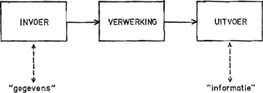

Je typt iets op je toetsenbord, klikt met je muis en binnen een paar seconden verschijnt er een resultaat. Maar wat gebeurt er eigenlijk tussen die twee momenten?
Computers werken hierbij met drie belangrijke stappen: invoer → verwerking → uitvoer.
Dit wordt ook wel het IPO-model genoemd: Input, Process, Output.
Eigenlijk is bijna alles wat je met een computer doet hierop terug te brengen.
Eerst moet de computer informatie krijgen. Dat noemen we invoer.
Denk bijvoorbeeld aan een toetsenbord, muis, microfoon, camera of touchscreen.
Daarna gaat de computer met deze informatie aan de slag. De processor voert berekeningen en opdrachten uit.
Dit gebeurt vaak zo snel dat je het nauwelijks merkt.
Uiteindelijk krijg je een resultaat. Dit noemen we uitvoer.
Bijvoorbeeld een afbeelding op je scherm, geluid uit je speakers of een document uit de printer.

Het IPO-model klinkt misschien ingewikkeld, maar je gebruikt het waarschijnlijk iedere dag.
1. Invoer: je typt een bericht op je telefoon.
2. Verwerking: je telefoon verwerkt de tekst en verstuurt de gegevens via het internet.
3. Uitvoer: het bericht verschijnt op het scherm van de ontvanger.
Zo werkt het dus niet alleen bij computers, maar bij heel veel apparaten die informatie ontvangen, verwerken en een resultaat geven.
Wil je zien hoe invoer, verwerking en uitvoer samenkomen in een computersysteem? Bekijk dan deze korte uitlegvideo.
Ik heb deze video gekozen omdat de uitleg goed aansluit bij het IPO-model. De drie stappen worden duidelijk uitgelegd en je krijgt een beter beeld van wat er achter de schermen van een computer gebeurt.
De video is in het Engels, maar de uitleg is duidelijk te volgen. Hierdoor is het een goede aanvulling op de Nederlandse tekst op deze pagina.